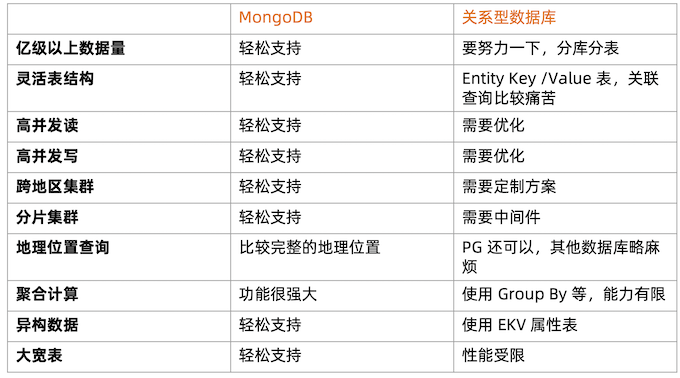
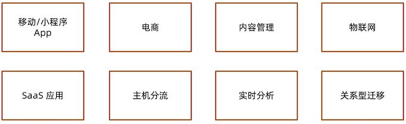
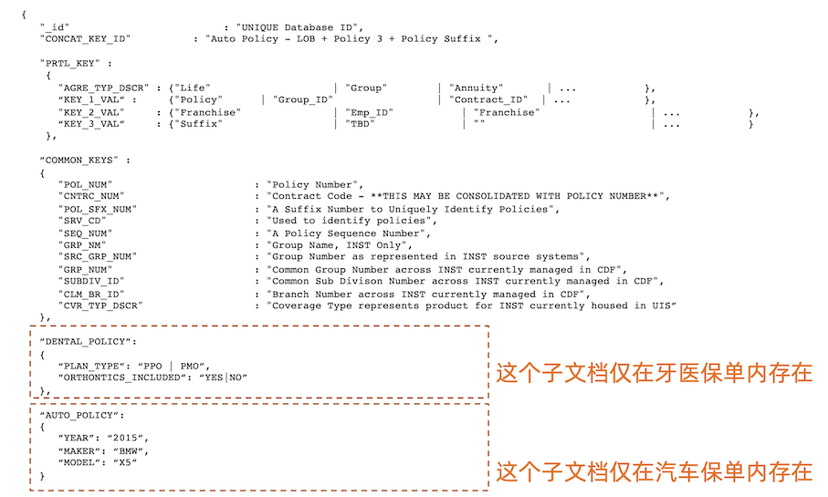
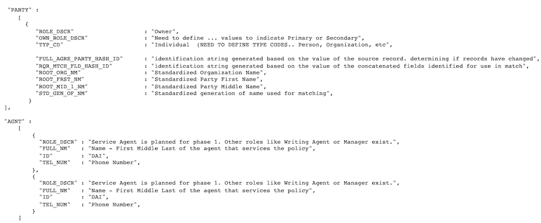
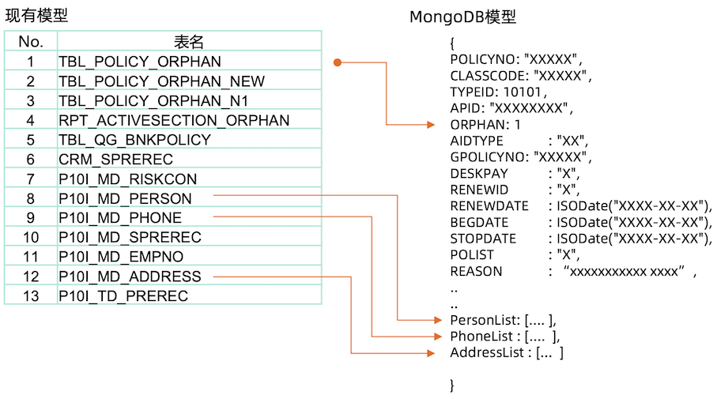
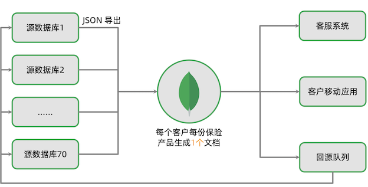
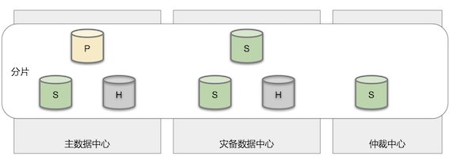
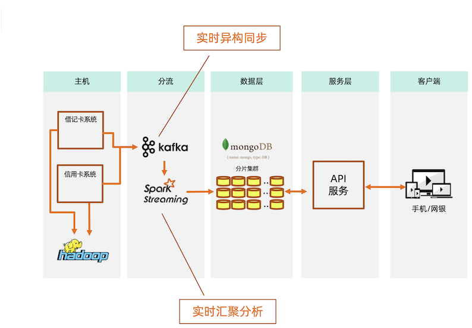
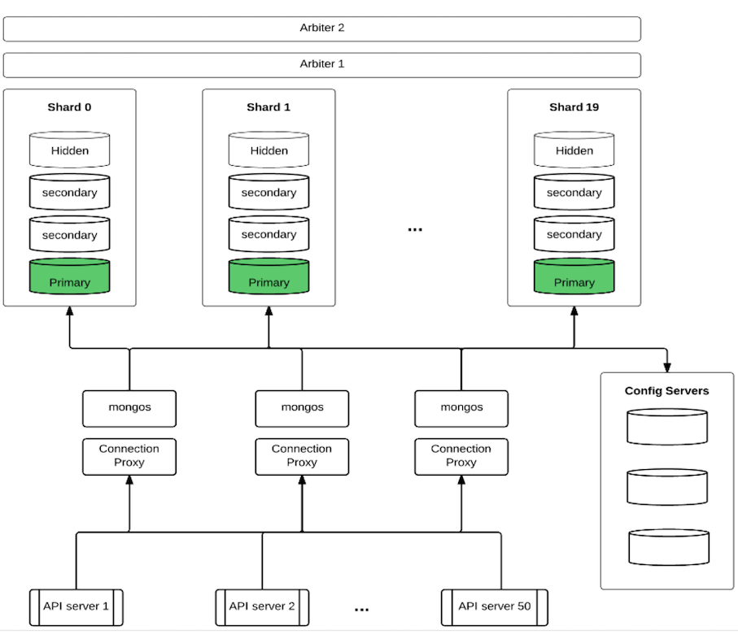

16 MongoDB 应用实例和场景
1 MongoDB 应用场景及选型
1-1 MongoDB 数据库定位
- OLTP 数据库
- 原则上 Oracle 和 MySQL 能做的事情，MongoDB 都能做(包括 ACID 事务)
- 优点:横向扩展能力，数据量或并发量增加时候架构可以自动扩展
- 优点:灵活模型，适合迭代开发，数据模型多变场景
- 优点: JSON 数据结构，适合微服务/REST API
基于功能选择 MongoDB

基于场景选择 MongoDB

移动应用
场景特点
- 基于 REST API / JSON
- 快速迭代，数据结构变化频繁
- 地理位置功能
- 爆发增长可能性
- 高可用
MongoDB 选型考量
- 文档模型可以支持不同的结构
- 原生地理位置功能
- 横向扩展能力支撑爆发增长
- 复制集机制快速提供高可用
- 摩拜单车 / Keep / ADP
商品信息
场景特点
- 商品信息包罗万象
- 商品的属性不同品类差异很大
- 数据库模式设计困难
MongoDB 选型考量
- 文档模型可以集成不同商品属性
- 可变模型适合迭代
- 京东商城 /小红书/ GAP
内容管理
场景特点
- 内容数据多样，文本，图片，视频
- 扩展困难，数据量爆发增长
MongoDB 选型考量
- JSON 结构可以支持非结构化数据
- 分片架构可以解决扩展问题
- Adobe AEM / Sitecore
物联网
场景特点
- 传感器的数据结构往往是半结构化
- 传感器数量很大，采集频繁
- 数据量很容易增长到数亿到百亿
MongoDB 选型考量
- JSON 结构可以支持半结构化数据
- 使用分片能力支撑海量数据
- JSON 数据更加容易和其他系统通 过 REST API 进行集成
- 华为 / Bosch / Mindsphere
SaaS应用
场景特点
- 多租户模式， 需要服务很多客户
- 需求多变，迭代压力大
- 数据量增长快
MongoDB 选型考量
- 无模式数据库，适合快速迭代
- 水平扩展能力可以支撑大量用户增长
- ADP / Teambition
主机分流
场景特点
- 金融行业传统采用 IBM 或者小机
- 传统瀑布开发模式流程长成本高
- 结构不易改变，难于适应新需求
- 根据某银行的统计，99%的数据库 操作为读流量
- 基于 MIPS 付费，读流量成本
MongoDB 选型考量
- 使用实时同步机制，将数据同步出 来到 MongoDB
- 使用 MongoDB 的高性能查询能力 来支撑业务的读操作
- 相比于关系模型数据库，更加容易 迁入数据并构建成 JSON 模型进行 API 服务
实时分析
场景特点
- 流数据计算
- 快速计算，秒级返回
MongoDB 选型考量
- 使用 MongoDB 缓存机制，可以利 用内存计算加速
- 使用 MongoDB 聚合框架，实现分 析功能
- 使用微分片架构的并发计算来大量 缩减计算时间
关系型数据库替换
场景特点
- 基于 Oracle / MySQL/ SQLServer 的历史应用
- 数据量增长或者使用者变多以后性 能变慢
- 分库分表需要应用配合
- 结构死板，增加新需求复杂困难
MongoDB 选型考量
- 高性能高并发的数据库性能
- 无需应用分库分表，集群自动解决 扩容问题
- 动态模型适合快速开发
- 头条/网易/百度/东航/中国银行
MongoDB 典型案例
案例一:客户360 世界500强保险公司
业务需求
跨国保险公司，来自60多个国家的 9000多万用户，70多套业务系统。客 户信息分散在多套系统里，希望构建 一个客户360视图。
第一阶段支撑客服部门更好服务客户，减少客户等待时间。
第二阶段构建客户管理手机 App，自 助管理所有保单。
为了达到这些目的，需要整个70+历 史系统中的客户信息，通过唯一入口查询。
业务难点
- 来自60多个国家的9000多万用户，数据量大。
- 70多套不同的保险业务系统的数据需要汇集到一起。
- 已有系统在不断迭代，导致最终数据模型不断变化。
- 关系数据库的结构变化复杂性高，流程长，往往一个迭代未完成，源头系统又变化了。
关系型 vs MongoDB
- 使用关系数据库的尝试:
- 历时2年
- 前后分别使用2个不同的关系型数据库，
- 两个不同的厂商/团队
- 花费 $2500万美元
结果:失败，schema 太复杂，无法有效的 把70套系统的 schema 融合成一套。
使用 MongoDB 的尝试:
- 动态数据模型轻松接收不同数据
- 7x24小时高可用
结果:2个星期做原型，3个月上线。
MongoDB 的数据模型


保单: 13张关联表 => 1张保单表:让存储、查询变得更简单和灵活。

系统架构

系统架构

案例小结
此案例利用了 MongoDB 的以下特性:
- 反范式的数据模型使得复杂数据整合成为可能
- 高可用(本地和跨机房)
- 故障发生时应用可以自动切换到正常的节点上
- 可以在秒级时间内完成故障转移，使得用户体验得到保证
因为这些特性的存在，使得项目成功。
案例二:主机分流(主机下行)国内四大行之一
业务需求
为提升用户体验，该银行要在手机银行APP中支持实时账户交易历史查询。涉及的数据包括:
- 借记卡交易历史。
- 信用卡交易历史。
- 后续还将支持股票、基金账户等。
对这些交易历史进行整合，使用户可以看到自己账户的交易历史全貌。涉及的交易数据 量:
- 约6000万交易数据/天，结息日达到~5亿/天。
- 历史存量数据3年，超过600亿。
- 核心系统(主机)支持这样的流量非常困难，成本太高。
方案选择:主机分流
关系型数据库:
- 超大量数据需要巨大数量的 DB 实例。
- 考虑高可用，成本极高。
- 分库分表造成开发难度大幅上升。
- 整合不同账户数据时表结构差异大，合并困难。
结果:评审期被否定
使用 MongoDB 的尝试:
- 动态数据模型轻松接收不同数据。
- 水平扩展解决大数据量问题。
- 7x24小时可用
结果:成功上线
系统架构

案例小结
主机分流架构特点:
- 处理接近每秒1万的交易数据
- 总量数百亿
- 查询平均性能数毫秒
本案例中利用了 MongoDB 的以下特性:
- 灵活数据模型:使数据整合更为容易
- 弹性扩展:使得海量数据 + 低延迟查询成为可能
案例三:MySQL 迁移顶级互联网公司
业务场景
- 旗下多个 App
- DAU7亿
- 42万+服务器
- 每天新增30PB数据(包含非结构化)
- 每日线上变更 6000+
- 标准数据方案
- MySQL + Redis + 对象存储
- 结构化和半结构化在MySQL
- MySQL: 数万台服务器
痛点
- 数据库变更需要团队配合，对6000+/天的频繁变更造成很大阻碍
- MySQL 集群本身扩容比较困难
- 中间件的约束较多
- 迭代速度受影响
新的方向
- MongoDB 无须中间件，改善变更效率
- 集群扩容容易
- 结构灵活，迭代快
MongoDB 业务场景
-
在线 TP 业务
- 数据模型多变，新增 collection 比较常见
- 低时延和少毛刺
- 请求量大
-
中台元数据管理
- 中台系统，schema 需要很多嵌 入式文档
- 数据量大，点查为主
-
LBS 地理位置
- 计算密集，数据点小，但是量大
- 写入更新异常频繁
-
游戏
- 游戏日志写入量大，查询量一般
- 在线分析需求
案例四:海量数据存储顶级互联网公司
亿级用户网盘应用
-
挑战
- 网盘通讯录，短信存储管理
- 网盘文件元数据管理
- 用户操作日志
- 数亿用户体量
- MySQL集群无法支撑性能的诉求
-
解决方案
- 迁移到MongoDB分片集群
- 快速增长时期每三个月扩容一次
- 系统2012年上线运行至今
- 有力支撑业务的持续发展，目前支撑100多个业务
- 2PB+ 的数据存储量
- 100多个分片
技术架构

架构特点
- 分片集群
- 片键:userid
- 并发5000/s/节点
- 通过自建proxy限流
硬件规范:
- CPU: 8 Core
- RAM: 48G
- Storage: 2T SSD, RAID 0